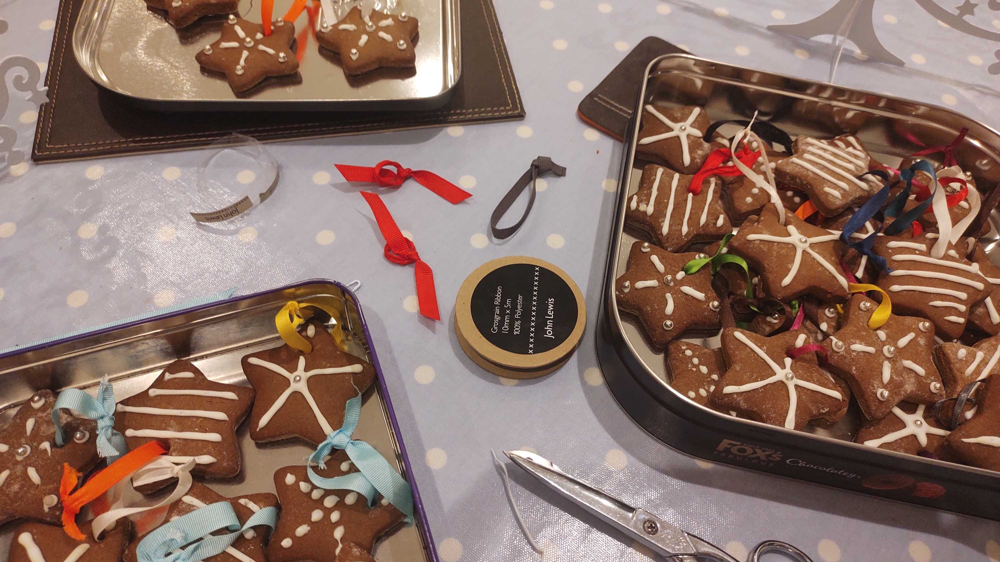
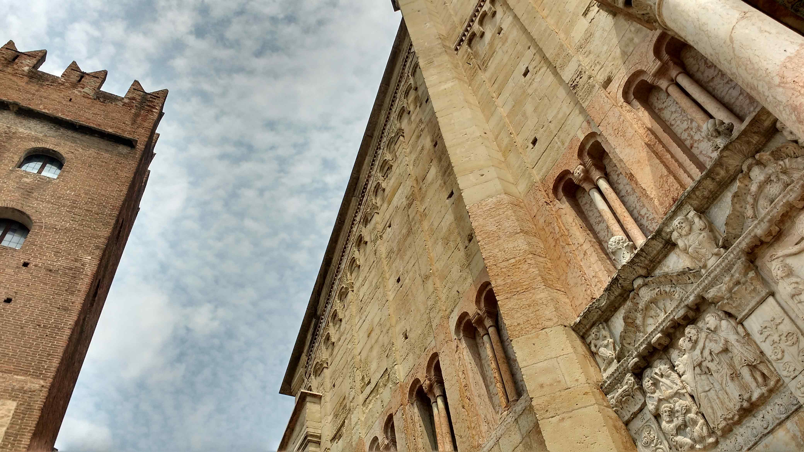
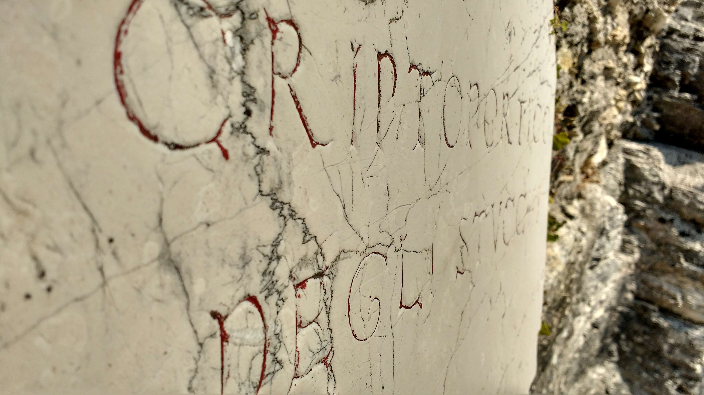
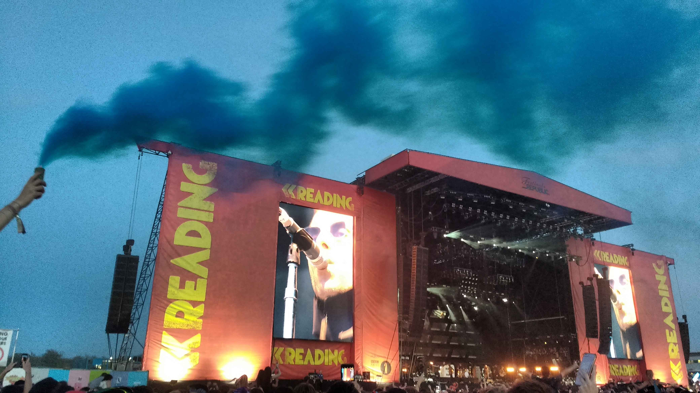

Ancient History - For as long as I can remember, I have been fascinated with Ancient Egypt and it wasn't long before interests in Greek, Roman and Persian history joined it.
Live Music - I enjoy going to gigs and festivals to see bands I've been following as well as to find new upcoming music.
Playing Instruments - One of my main hobbies is playing music - I can play the bass and drums but I mostly play my guitars for which I like picking up new pedals to add to my collection of strange sounds:
Cooking - Although predominantly part of my schedule in the festive season, I try to cook and bake as much as possible throughout the year (but I haven't decided if I like the cooking itself or just the result!)
Travelling - Although it's incredibly cliché, I enjoy going travelling to foreign countries to experience different cultures and (most importantly) try delicious food!